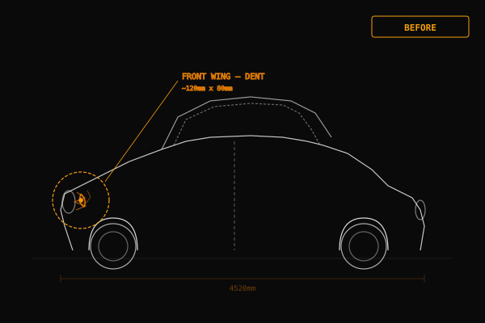

Structural repair. Welded to spec.
Safe to drive.
Safety-critical collision metalwork in Dundalk, Co. Louth. When the damage goes deeper than a dented panel — into sills, chassis legs, floor pans and load-bearing structure — this is what we do. MIG, TIG and spot welding to manufacturer specification. No shortcuts on the parts that keep you alive.

What counts as structural damage
Not every crash involves structural repair. A dented wing, a creased door, a bent bumper bar — that is cosmetic panel damage. It looks bad and it needs fixing, but it does not affect the safety architecture of the car. A good panel beater can straighten it, a sprayer can finish it, and the car is as safe as it was before.
Structural damage is different. It means the collision has deformed or broken parts of the car that are engineered to absorb and redirect crash energy. These are the members hidden behind the outer panels: front and rear chassis legs (rails), sills, inner wheel arches, A/B/C pillars, floor pans, bulkheads and cross-members. They form a cage around the passenger compartment. In a collision, they crumple in a controlled sequence to absorb kinetic energy before it reaches the people inside.
When these members are damaged and not repaired correctly, the car looks fine but the safety cage is compromised. In a second collision the energy routing will not work as the manufacturer intended. Crumple zones that have already crumpled and been poorly straightened will fold in the wrong place, at the wrong rate. The passenger cell may intrude. Airbag timing calibrations assume a certain deceleration curve — if the structure does not deliver that curve, the airbags may fire too early or too late.
This is why structural repair is a different discipline from panel beating. It requires the right welding equipment, the correct replacement steel grades, manufacturer repair procedures, and an understanding of how crash energy flows through a modern unibody shell. We treat it accordingly.
Structural repair services
Front rail / chassis leg replacement
The front rails absorb the bulk of frontal collision energy. When they are kinked, compressed or cracked, we cut them out and weld in new sections to factory specification. Measured on the jig before and after.
Sill cut and replace
Sills are the main longitudinal members running under the doors. Side impacts and pole strikes compress them. We section or fully replace sills using spot-welded flanges matching the original join pattern.
Inner wheel arch replacement
Inner arches tie the suspension turrets to the bulkhead and sill. Frontal offset impacts drive the wheel back into the arch. We replace the inner arch panel and re-establish the turret geometry.
Rear quarter cut-ins
Rear quarter panels are welded to the body — they do not unbolt. When damaged beyond repair, we cut the old panel out at factory seam lines and weld in a replacement section with correct overlap and seam sealing.
Floor pan repair
Floor pans carry seat mounting points and contribute to torsional rigidity. Corrosion or collision damage weakens them. We patch or replace floor sections with the correct gauge steel, plug-welded and seam-sealed.
Roof skin replacement after rollover
Rollover damage crushes the roof and distorts the pillars. We replace the roof skin, check pillar alignment on the jig, and ensure the header rail and cant rail profiles are restored to factory dimensions.
Welding we use
MIG welding
Metal Inert Gas welding produces strong, penetrating welds on thicker mild steel sections — chassis legs, subframe mounts, reinforcement plates. Fast deposition rate for structural joins that need strength and volume. This is the workhorse weld for heavy structural sections where heat input is less of a concern.
TIG welding
Tungsten Inert Gas welding gives precise heat control for thinner materials, stainless steel and exotic metals. Lower heat input means less distortion on panels and thin-gauge structural members. Essential for aluminium subframes and high-strength steel where excessive heat would compromise the metallurgy.
Spot welding
Resistance spot welding replicates the factory joining method. Two copper electrodes clamp the panels and pass high current to fuse them at a single point — no filler metal, no heat-affected zone spreading along the seam. This is how manufacturers join body panels, and it is how they should be rejoined in repair.
Why MIG-only shops are a problem
Many body shops in Ireland do not own a proper resistance spot welder. They MIG-weld everything — including the seams that the factory originally spot-welded. This is not to specification. A MIG plug weld through a drilled hole is not the same as a resistance spot weld. The heat-affected zone is larger, the weld profile is different, and the crash energy routing through the joint changes.
Manufacturers specify spot welds for a reason. In a collision, spot-welded flanges are designed to peel apart in a controlled sequence, absorbing energy progressively along the seam. A continuous MIG bead or a series of MIG plug welds does not peel the same way. It may hold in normal use but behave unpredictably in a second crash. If a shop tells you they can "spot weld with the MIG," that is not the same thing. We use a dedicated resistance spot welder with the correct electrode tips, squeeze pressure and weld current for each panel thickness.
Cut-and-shut rectification
We see cars that have been badly repaired elsewhere — sometimes by previous owners, sometimes by shops that took on work beyond their capability. Cut-and-shut jobs where two halves of different cars have been welded together. Structural members that were straightened cold instead of replaced. Sills packed with filler to hide rot. Chassis legs that were heated and pulled back roughly into shape without measuring.
We provide honest assessments of these cars. If the previous work can be rectified — cut out and redone properly — we will quote for it. If the car is beyond safe repair, we will tell you. We would rather lose a job than send an unsafe car back on the road. If you are buying a used car and something looks wrong underneath, bring it to us before you hand over the money. A half-hour inspection could save you thousands.
Structural repair pricing guidance
Structural work varies hugely in scope, so every job is quoted individually after inspection. These ranges give you a rough idea of typical costs for common structural repairs. All prices are for the metalwork only — painting is separate, done by your chosen sprayer.
Sill section repair
From €400 to €900 depending on whether it is a partial section or full sill replacement. Includes cut, fit, spot weld and seam seal.
Chassis leg replacement
From €600 to €1,200 per side. Includes jig mounting, cut, new section weld-in, alignment check and documentation.
Rear quarter cut-in
From €500 to €1,000 depending on cut lines and panel source. OEM panels cost more but fit better. Aftermarket available on request.
Floor pan / inner arch
From €300 to €800 depending on area and whether it is patch repair or full panel replacement. Corrosion repairs at the lower end, collision damage at the upper.
WhatsApp us photos of the damage and we will quote within 2 hours. No obligation. For complex structural jobs we may need to see the car in person before committing to a final price.
Our structural repair process
Inspect and strip
We strip the damaged area back to bare metal and inspect every structural member in the impact zone. Hidden damage behind trim and underseal is identified and documented. We photograph everything and share it with you before quoting.
Mount and measure
The car goes on the chassis jig. We take baseline measurements against manufacturer datum points. This tells us exactly how far each structural member has moved and which sections need replacement versus straightening.
Cut, weld and align
Damaged sections are cut out at factory seam lines. New panels are fitted, clamped and welded using the correct method — spot, MIG or TIG as specified. The jig holds everything in alignment during welding so nothing shifts as the metal cools.
Seal, protect, document
All new welds are dressed, seam-sealed and treated with zinc-rich primer and cavity wax to prevent corrosion. Final jig measurements are taken and documented. The car leaves ready for your sprayer to finish the visible surfaces.
Structural repair FAQ
How do I know if structural repair is needed?
If a collision has affected anything beyond the outer skin panels — sills, chassis legs, floor pan, inner arches, bulkheads — that is structural damage. Signs include uneven panel gaps, doors that will not close properly, pulling to one side, and visible creasing or kinking on underbody members. Any hit severe enough to deploy airbags almost certainly involves structural damage. We can inspect and tell you exactly what is affected.
Is a structurally-repaired car safe?
Yes — provided it is done correctly. Structural members must be repaired or replaced using the correct weld types, the right grade of replacement steel, and manufacturer-specified joining methods. When we replace a sill or chassis leg, we use proper resistance spot welding where the factory used spot welds, not MIG imitations. The repaired section must match factory crush characteristics so it absorbs energy correctly in a future collision.
Will it pass NCT after structural work?
A properly repaired car will pass NCT. The tester checks for structural integrity, corrosion in load-bearing areas, and correct chassis geometry. Our repairs are done to manufacturer specification with documented measurements. We make sure all structural welds are dressed, sealed and rust-protected so they hold up over time. If a car cannot be brought back to a safe, testable standard, we will tell you before we start.
Get your car assessed
WhatsApp us photos of the damage and we will tell you whether it is cosmetic or structural — and what it will cost to fix properly. Quote in under 2 hours. No obligation.
086 066 6591 · {{EMAIL}}
{{STREET_ADDRESS}}, Dundalk, Co. Louth, {{EIRCODE}}
Mon–Sat 8:00–18:00 · Sun closed